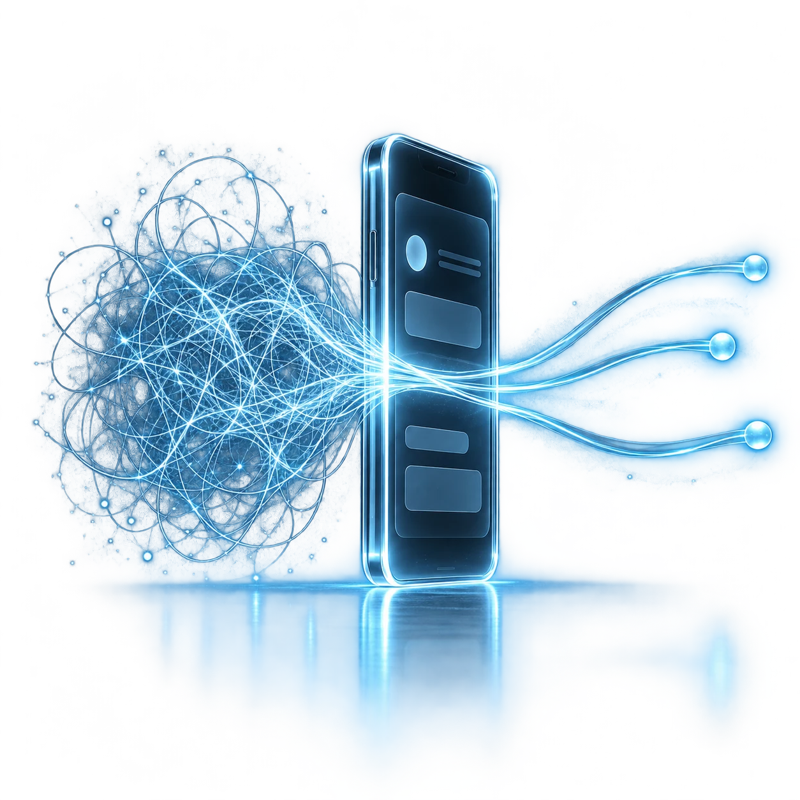

DESIGN · TECHNOLOGY · EVERYDAY LIFE
Life in motion.
Ideas taking shape.
Exploring app ideas inspired by the way you live.
Drag to explore
Everyday moments.
New possibilities.
It starts with a moment worth paying attention to.
I explore where design and technology meet everyday life—from small rituals to unexpected discoveries.
These scenes are a starting point, not a catalogue of finished apps. As ideas become projects, this space will grow with them.
